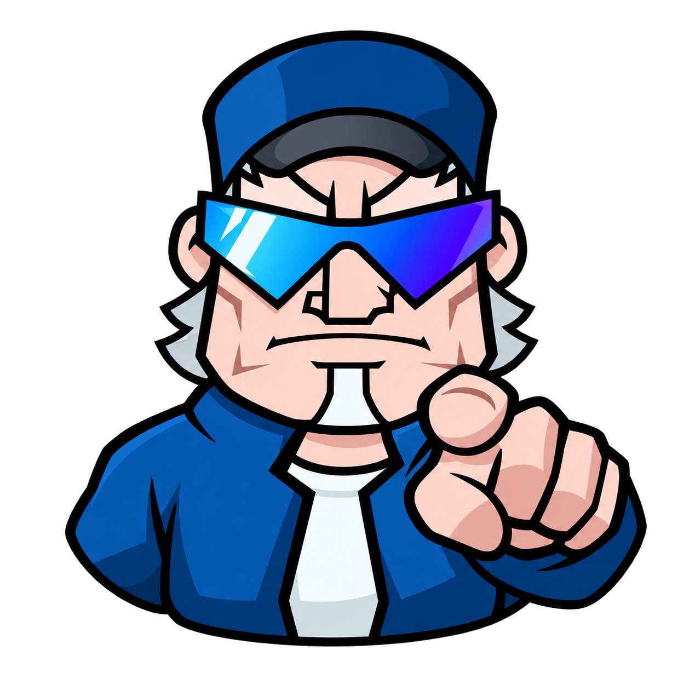

BASEBALL HEROES · 1.0.23 · 22 OCT 2026Metas de temporada con el marco del gameplay
Publicada y comprobada por HTTPS. La 1.0.23 ya está disponible. Incluye las mejoras de sprites que habían quedado pendientes de 1.0.19 a 1.0.22. Railway reactivó los despliegues y se renovó automáticamente la sesión oficial.
Panel claro con borde y reflejos, encabezado inclinado, entrenador señalando, dos rodillos con luces y botón ACCEPT. Las metas y sus reglas conservan el modelo anterior; instrucciones y avisos en español.
Abrir el juego · Notas y pruebas · Sprite, herramienta y prompt
Antes y después en la misma carrera
Se fijaron 70 HIT y 55 RBI únicamente en una cuenta QA para que las dos capturas usen los mismos objetivos. La cuenta empieza en nivel 1, Rookie, con 6,000 Coins y sin lentes. Estos valores no se imponen a las carreras existentes.
 Antes · 1.0.22
Antes · 1.0.22 Después · 1.0.23 · WebMain real en Chrome
Después · 1.0.23 · WebMain real en ChromeReferencia y resultado
Se midió la composición del video inicial, en 01:44–01:47. El entrenador es una reconstrucción de su pose; la tipografía y el fondo son aproximaciones. SPIN AGAIN conserva el giro manual que ya permitía el remake.
 Original · panel, globo, entrenador y rodillos
Original · panel, globo, entrenador y rodillos Remake · giro animado y luces
Remake · giro animado y lucesUn giro guardado, sin cobros adicionales
Tres clics rápidos generan una sola escritura de metas. La animación de entrada y una recarga no vuelven a sortearlas. ACCEPT fija el resultado y continúa al calendario, incluso al pulsarlo mientras gira. También se comprobó el objetivo HR de guardados anteriores. No cambian Coins, energía, identidad ni equipo.
 Continuación al calendario
Continuación al calendario Compatibilidad con HR
Compatibilidad con HRRecorrido local · Conservación y paquete · Biblioteca verificada
Sprite integrado

Generado con image_gen integrado. Se conserva el PNG completo y su alfa, sin modificar la imagen con Python. El juego prepara cuatro fragmentos compartidos de hasta 1024 px; no carga una imagen por fotograma. Prompt completo y referencias.
La entrega también incorpora inventario ilustrado, estadio Rookie, BUILD y misiones y trofeos. No se reinician cuentas. Sigue pendiente la prueba entre dos computadoras reales de amigos.